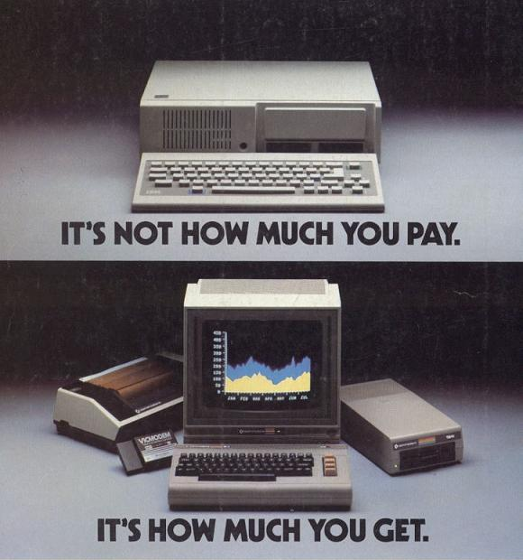

Operating System
Microsoft Disk Operating System (MS-DOS)
 In Microsoft's early years, they had a deal with IBM (International Business Machines, a major computer manufacturer at the time) to provide an operating system for their new IBM PCs (personal computers).
The small tech startup managed to get in contact with the largest computer company of the era because Bill Gates's mother, Mary Gates, was a well-connected businesswoman.
She was able to get IBM to consider the company "run by Bill Gates, Mary Gates's son" as the prime candidate for providing an operating system.
A key part of the negotiation terms Microsoft gave was the ability for Microsoft to sell their operating system to other manufacturers, IBM could not prevent them from licensing their operating system to other manufacturers, like Compaq.
In Microsoft's early years, they had a deal with IBM (International Business Machines, a major computer manufacturer at the time) to provide an operating system for their new IBM PCs (personal computers).
The small tech startup managed to get in contact with the largest computer company of the era because Bill Gates's mother, Mary Gates, was a well-connected businesswoman.
She was able to get IBM to consider the company "run by Bill Gates, Mary Gates's son" as the prime candidate for providing an operating system.
A key part of the negotiation terms Microsoft gave was the ability for Microsoft to sell their operating system to other manufacturers, IBM could not prevent them from licensing their operating system to other manufacturers, like Compaq.
 However, Microsoft didn't have an operating system for the relatively new Intel 8086 chipsets the IBM PC series ran on.
Because of this, Microsoft bought Tim Paterson's Seattle Computer Products 86-DOS, also known as the "Quick-and-Dirty Operating System" (QDOS) , for a hefty sum of 75 thousand dollars, almost 215 thousand today.
They then made tweaks to rebrand and release it as the Microsoft Disk Operating System (MS-DOS).
After this, MS-DOS would be released for a variety of computers under a plethora of manufacturer brands.
This was the start of Microsoft's software and financial dominance that we still recognize today.
However, Microsoft didn't have an operating system for the relatively new Intel 8086 chipsets the IBM PC series ran on.
Because of this, Microsoft bought Tim Paterson's Seattle Computer Products 86-DOS, also known as the "Quick-and-Dirty Operating System" (QDOS) , for a hefty sum of 75 thousand dollars, almost 215 thousand today.
They then made tweaks to rebrand and release it as the Microsoft Disk Operating System (MS-DOS).
After this, MS-DOS would be released for a variety of computers under a plethora of manufacturer brands.
This was the start of Microsoft's software and financial dominance that we still recognize today.
Where are they now?
After the advent of the Apple Macintosh, which had a Graphical User Interface (GUI), Microsoft created the Windows desktop environment with the DOS operating system running under the hood. Microsoft saw major success with Windows 3.1, and the DOS kernel was used for Windows until Windows XP, where the new NT kernel replaced DOS. A vast majority of computers run Windows to this day, with Windows XP only recently losing its majority market share, despite being discontinued in 2014.
Commodore 64
 In 1981, Albert Charpentier from MOS Technology, a chip provider to companies like Atari, Commodore, Nintendo, and Texas Instruments, wanted to make the next video and sound chips for the next great video games. In November of that year, the chips had been designed, but the Commodore president decided to not use them in the declining video game market. Instead, a consumer personal computer with 64 kilobytes of RAM would be created and shown at the January 1982 Consumer Electronics Show. By August of 1982, the Commodore 64 was in full production and distribution. The lower price point of the computer ("under $600" in a time where most computers were at MRSPs above or at the $999/$1000 price point) was the main appeal of the C64. The operating system allowed for BASIC programs to be easily created and executed, essential parts of hardware, like the monitor, were built in, and cassette tapes and floppy disks were simple to plug and play off of. All of these consumer-friendly qualities earned it the world record for most sold computer model, with over 10 million units sold .
Sources: https://www.opengroup.org/membership/forums/platform/unix